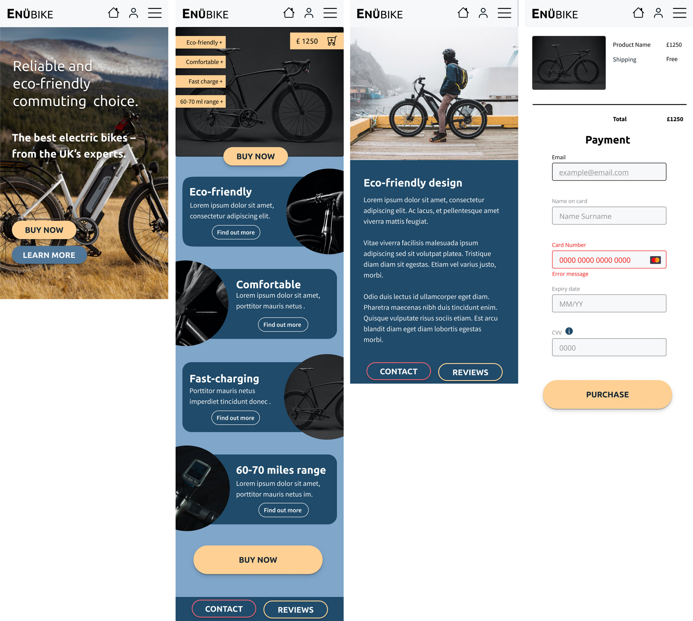

E-bike online shop. Case Study
Challenge
To create a functioning prototype based on design principles.
Since the beginning of pandemic, I was looking for an alternative
mode of commute. I ended up purchasing an electric bike. After
spending hours browsing various sites and comparing different
technical details, I thought it would have been great to have a
site with just one product that's perfect for city commuters. I
decided to create an e-bike e-commerce brand and a website that's
simplified the choice.
To create a Persona for my project I used an online project
generator for UX/UI design briefs. My ideal customer is a man
named Leo. Leo is in their mid 40's and lives with friends. They
are a high school graduate and work in a small team. Leo lives in
London, is very familiar with your product and is very
Environment/Eco/Waste conscious. I used Figma and Photoshop for
this project.
Process
I decided to take a mobile first approach to the design and worked on the mobile version of the website first. I started with researching competitors and imagery and creating a set of wireframes.
According to Gestalt law of simplicity users always look for the simplest was to understand something, and I wanted to keep the mobile website simple both from the information architecture a nd content point of view. I decided to keep the home page very lean with only the header, main image, marketing message and buttons that say, ‘learn more’ and ‘buy now’. I wanted to avoid the content that might distract the user from purchase. I added product page with features of the product, checkout page and a confirmation. I also used a maximum 2 columns of content bearing in mind the size of the screens is small on mobile.
Layout
I used a mixture of 8px and 4px grid when designing and placing the elements to create consistency.
I applied a concept of Vertical Rhythm to create the pages where elements looked more harmonious. I aimed to keep vertical spaces between elements on a page consistent with each other.
Colour
I picked the primary and secondary colours using colour picker tool in Figma from one of the images I downloaded earlier while workign on a mood board and doing competitor's research. The same image will be used for the main banner on the home page. I used blue as the primary colour as wanted my main tone to convey a sense of calm and trust. I selected yellow as secondary colour as it works well with blue being on the opposite side of the colour wheel. Yellow is happy, optimistic, and cheerful which I though will work well with a cycling brand. I also decided to use images of the bicycles on a black background as product shots and yellow colour will look good against black creating a strong contrast but also adding quite masculine look and work well for my UX Persona.
To add an accent colour I used Adobe colours to select a compelling colour scheme, and added a pink colour as an accent. I then used Material Design’s colour tool to get a darker and a lighter shade of the blue and to check what will text look like against those colours to make sure it is legible. I also added a few grey shades with a touch of blue as well as slightly off-white colour and a black colour with a touch of blue.
Typegraphy and Logo
I was looking for something quite bold and modern as a main font, something that would look equally good as a header and applied as a logo on a bicycle. As I came up with a name for the brand, I wanted it to start with a letter ‘E’ for e-bike and have a letter ‘U’ which I planned to turn into an electric plug. I named the brand Enu and typed its name to compare a few fonts side by side.
I decided on a monospace font as I wanted the letters to be equally spaced and was looking for a minimalist modern look.
I selected Ubuntu font family as the font for headings and then looked for good font pairings. I then selected another sans-serif font for the body called Source Sans Pro. There’s an ongoing debate about whether serif or sans-serif fonts are best in terms of readability sans-serif fonts are often favoured for online/on-screen text due to their simplified letterforms that display more clearly at various screen resolutions. I then created font hierarchy using type scale tool and picked 1.250 Major third scale as a base, later on replacing some of the heading sizes to better suit my design as I worked through it.

Accessibility
Colour Contrast Analyser app was used to test there’s a sufficient contrast between elements, it can help users with low vision or users in bright or dark light conditions use the website. I used the app to check the text but also various UI elements and made a series of adjustments. As a result of the tests, I added a stroke in Log in screens as the contrast ratio between the form fields and the background was not enough. I also added a shadow and a stroke to reviews cards.
I used off-white colour as a background and not completely black but black with a touch of grey blue for text. Research suggests that less contrast in the case of black text on white background as well as white text on black background works better for accessibility as it reduces strain on the eyes
To make sure icons in the menu are easy to click I used Frames around them that are 44x44px.
After researching the best design for forms in terms of accessibility I added label text that is always visible and aligned with input line I also added error message field underneath alongside highlighting it with red.
To check the pages were legible for colour blind people I used a plugin in Figma called Color Blind.

User Testing
Testing the finished prototype, I asked the users to complete the purchase and to describe if they felt like there was not enough information at any time during the process. I also was aiming to estimate whether or not the users felt like the website was trustworthy.
After the tests I made several changes:
- I added reviews page as users reported they didn’t feel comfortable purchasing from a website without reviews.
- I also added more information about the individual features of the product, including a page about eco features since Leo, the Persona I was designing for was described as eco/environment/waste conscious.
- I also increased the size of the label that includes price tag as well as the labels that indicated more information was available for each of the features.

Prototype
I further tested the prototype and while users where able to complete the task of purchase and felt like they could trust the website.
View the prototype on Figma's platform or via the video.
4 User Interface Designs
Images
All the JPEG files were resized and saved for web at 70% quality. And while this doesn’t have a significant effect on quality in reduces the size dramatically from for example 1Mb to 300Kb.
Logo Design
I created logo using 2 different font weights and 2 font sizes in Figma. I wanted the first letter to standout as an association with electric bicycles and letter ‘U’ to look like an eclectic plug. I have adjusted font weight for the ‘BIKE’ part to regular and made the rest of the letters bold. I then turned ‘ENU’ into a vector shape and aligned two rectangular shapes with letter ‘U’. The files is exported as a Scalable Vector Graphic (SVG) so that it’s sharp no matter what screen it’s viewed on.
Lifestyle image on the home page
I removed the original logo from the bike the using Clone Stamp Tool and Spot Healing Brush Tool. I then applied Enu bike logo using Perspective Tool. I also darkened the image using Curves so that the text on home page is more legible.
Lifestyle image on the Features page
I retouched the original logo out using Clone Stamp Tool and Spot Healing Brush Tool. I then applied Enu bike logo using Perspective Tool.
Interior shot 1, Sofa
Click to view
original image 1
Click to view
original image 2
The original DNG file had been colour corrected as well as perspective-corrected using guides in Lightroom prior to exporting as lossless TIFF file
- o In Photoshop I removed the plug on the wall on the left-hand side and edited the line of the 2 panels joining together on the background using Clone Stamp and Patch Tool.
- I further colour corrected the image using Curves and Selective colour layers.
- Using frequency Separation technique, I edited the texture and the colour of the sofa in the separate layers using Gaussian blur for the texture and Clone Stamp (McKim, 2013). I reduced opacity of these layers to 80%.
- Using pen tool, I cut out the natural lighting on the background, in the image with the light ray, copied it and placed it on a separate layer in the image I was editing and enlarged it I then used gradient tool to make it slightly darker on the right-hand side. I used a Mask to remove the parts of light ray that were overlaying the sofa.
- I used Clone stamp to edit the greenery behind the sofa to give it more uniform look and get rid of the wooden platform that is visible on the lake.
- Finally, I sharpened the image using Jimmy McIntyre’s sharpening technique (Jimmy McIntyre, 2016).
- The image was required in 7x5 aspect ratio, I cropped it and in Safe for web dialog entered 1400x1000px.
Interior shot 2, Pendant
The original DNG file had been colour corrected as well as perspective-corrected using guides in Lightroom prior to exporting as lossless TIFF file
- In Photoshop I removed the plugs on the wall on both sides and edited the door out using Clone stamp and Patch Tool.
- I removed a little part of window that was showing above the staircase by copying onto a new layer part of the wall and merging it with the rest of the wall using masking.
- I further colour corrected the image using Curves and Selective colour layers.
- Using Frequency Separation technique, I edited the texture and the colour of the walls to blend in where the door was with the rest of the wall, on the separate layers using Gaussian blur for the texture and Clone Stamp. I reduced opacity of these layers to 85%.
- Using Frequency Separation technique, I also smoothed the texture in the window behind the image. I used a Curves layer to lighten that area and used a Mask to apply the curves layer’s effect only to the window area of the image.
- I used Clone stamp and Patch Tool to edit the scratches on the table.
- Finally, I sharpened the image using Jimmy McIntyre’s sharpening technique (Jimmy McIntyre, 2016).
- The image was required in 7x5 aspect ratio, I cropped it and in Safe for web dialog entered 1400x1000px.
Interior shot 3, Shelves and Hooks
The original DNG file had been colour corrected as well as perspective-corrected using guides in Lightroom prior to exporting as lossless TIFF file
- In Photoshop I removed the light switches on the walls on the right-hand side and edited the line of the 2 panels joining together on the background using Clone Stamp and Patch Tool.
- I further colour corrected the image using Curves and Selective colour layers.
- Using Pen Tool to cut out the shelves one by one and pasted them in straightening them, using guides to direct me.
- Using Clone Stamp Tool and Patch tool I removed the gaps and marks underneath the day bed as well as on the wall on the right-hand side.
- Using Frequency Separation technique, I edited the texture and the colour of the walls to blend it in and remove the makes created by Patch tool, on the separate layers using Gaussian blur for the texture and Clone Stamp. I reduced opacity of these layers to 80%.
- Finally, I sharpened the image using Jimmy McIntyre’s sharpening technique.
- The image was required in 7x5 aspect ratio, I cropped it and in Safe for web dialog entered 1400x1000px.
GIF
I created an asset in GIF format that could be used for a letter sign up as a pop up for a desktop version of the website.
- I separately exported a layer with the two different versions of the buttons from Figma as JPEGs..
- I added both images as layers to the same file in Photoshop.
- In the Timeline window I clicked “Create Frame Animation”.
- I selected how long each layer should stay for before switching to the next one.
- I selected loop playback and previewed the GIF by pressing the play icon.
- I then saved and exported the file as a GIF usign Safe for Web option to adjust the quality and size.